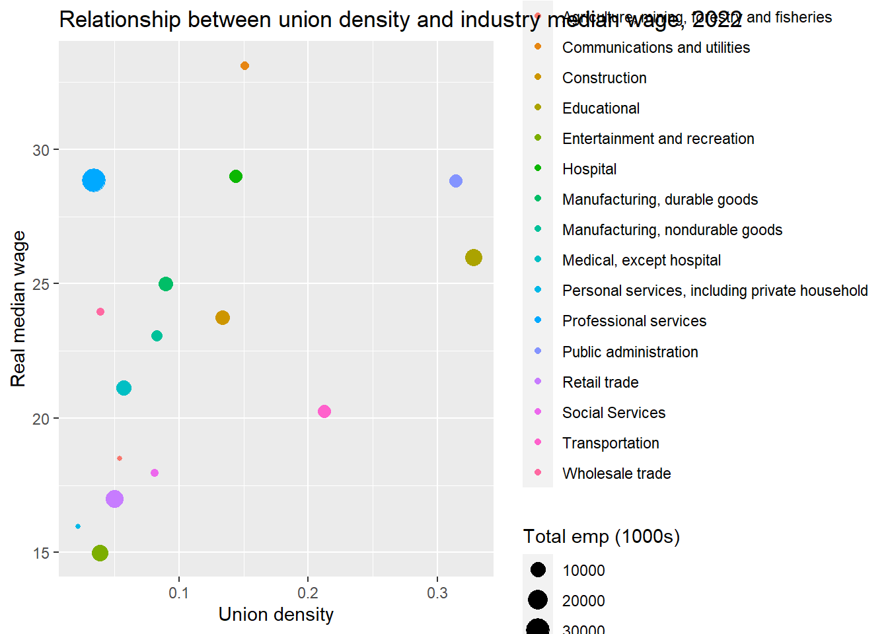
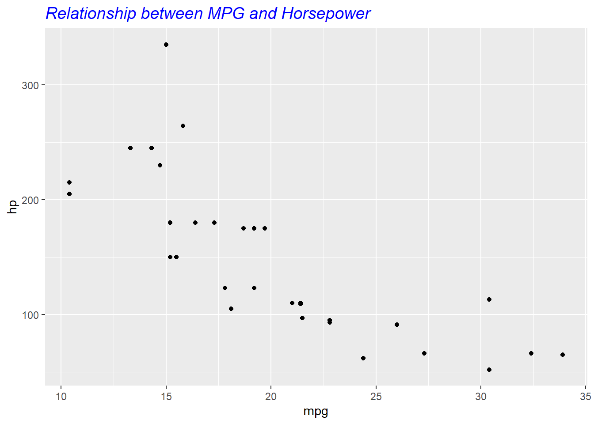

Welcome to the EARNCon 2023 Visualization workshop page
In this workshop you will learn how to create data visualizations using free tools like ggplot2 and Tableau.
1. Introduction
1.1 Brief Overview of ggplot2
ggplot2 is a data visualization package for R that allows users to create complex plots in a structured manner. It’s based on the Grammar of Graphics, which provides a coherent system for describing and building graphics.
1.2 Philosophy Behind ggplot2
At the core of ggplot2 is the idea of layers. This means starting with a blank canvas and then iteratively adding layers to create the desired visualization.
2. Basic Chart Creation
2.1. Basic Syntax: The big three
ggplot2
aes()
geom_point()
The foundation of any ggplot2 visualization starts with the ggplot() function. Within ggplot(), we call aes() to designate aesthetic mappings, and then append geometries like geom_point() to visually represent data points.
2.2. Practical Example
Using the mtcars dataset, we’ll illustrate the relationship between a car’s horsepower (hp) and its fuel efficiency (mpg).
A major advantage of ggplot2 is its flexibility in customizing visual properties, enabling you to enhance both the aesthetics and interpretability of your plots.
For instance, modifying the scatter plot by adjusting point properties:
Question: Why would I add aes to geom point vs aes?
The geom_smooth() with method=“lm” adds a linear regression line. The se=FALSE ensures the standard error bands are not plotted, and we’ve chosen a distinct red color for the line.
Layering and customization in ggplot2 ensures your visualizations are both visually appealing and insightful.
4. Customizing Plots with Themes and Labels
4.1. Themes in ggplot2
ggplot2 offers pre-set themes to modify plot aesthetics. Themes are a quick way to change the overall appearance of a plot, ensuring consistency presentations, papers, or reports.
For instance, let’s take the scatter plot we’ve been working with and apply a black and white theme:
Labeling is an integral part of making your plots interpretable. While some labels are inferred directly from the data, you often need to specify or customize them.
Here’s how to add a title, x-axis label, and y-axis label to our scatter plot:
ggplot(mtcars, aes(x=mpg, y=hp)) +geom_point() +labs(title ="Relationship between MPG and Horsepower",x ="Miles Per Gallon (MPG)",y ="Horsepower (HP)", )

4.3. Adjusting Text Elements
Text elements such as titles, axis labels, and annotations can be modified to better fit your plot’s aesthetic or to match specific publication requirements.
Here’s an example of adjusting the title’s size and color:
Note:
ggplot(mtcars, aes(x=mpg, y=hp)) +geom_point() +labs(title ="Relationship between MPG and Horsepower") +theme(plot.title =element_text(size=14, color='blue', face ='italic'))

# Note: Add some Hex code examples
Mastering these customization techniques will make your plots informative, engaging, and tailored for their intended audience!
5. Advanced Plot Types
5.1. Faceting and Multi-panel Plots
5.2. Interactive charts
Faceting enables the creation of multi-panel plots, helping visualize patterns across different subgroups without generating individual plots for each subgroup.
Let’s view scatter plots of mpg vs. hp but facet them by the number of cylinders:
Advanced plot types and features will elevate your data visualization skills, allowing you to craft detailed and insightful plots tailored to diverse datasets and questions.
6.0 Resources for layer-based chart visualization!